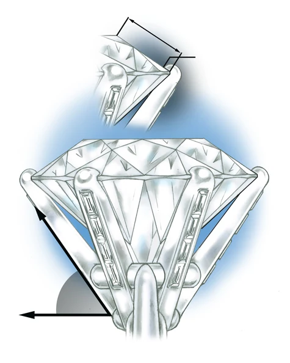
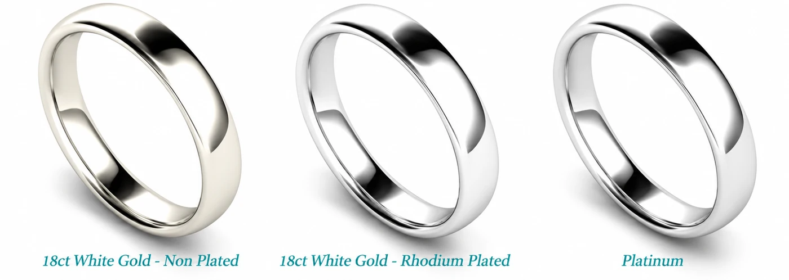
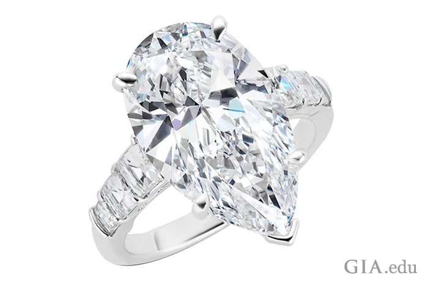
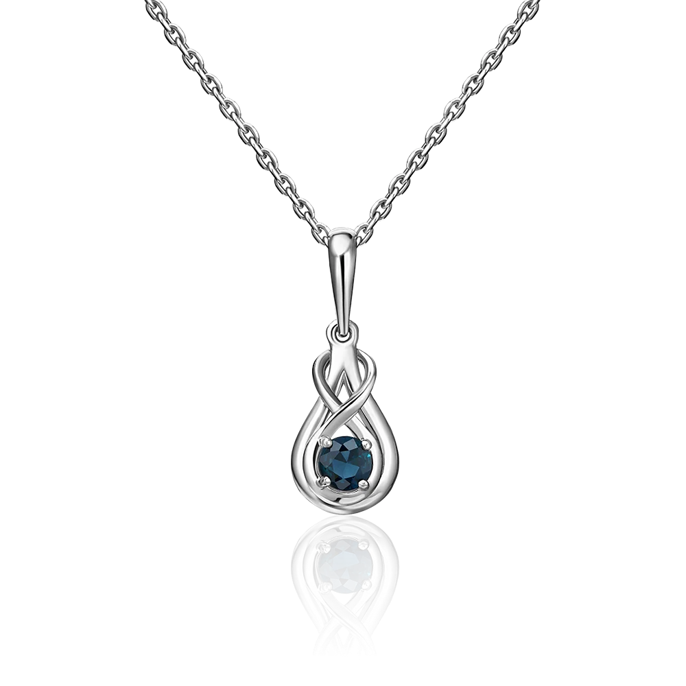
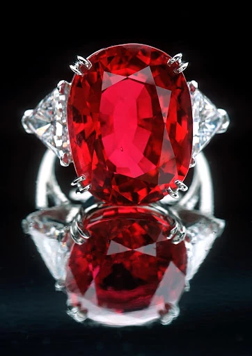
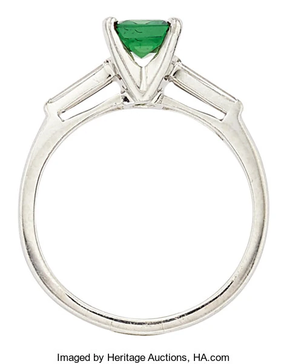
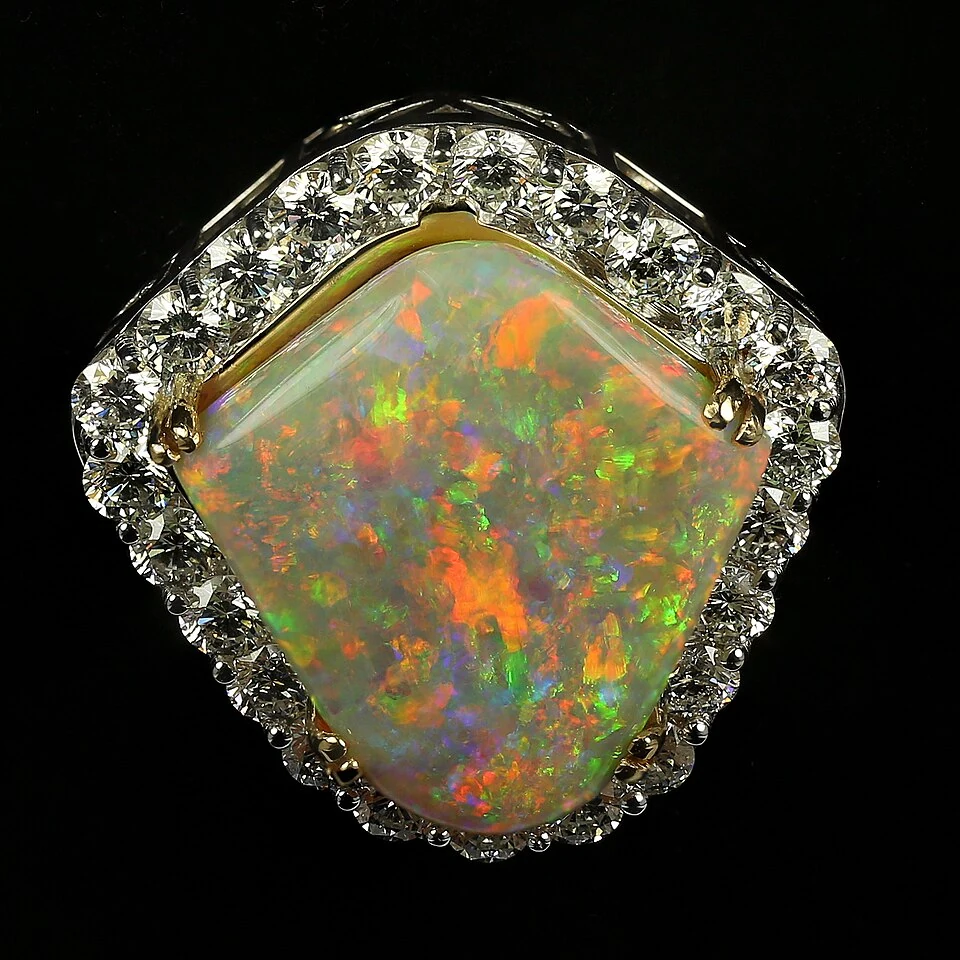

Представьте, что вы выбираете кольцо на каждый день. Продавец кладёт перед вами два кольца одинаковой формы и размера. В каждом — круглый природный бриллиант примерно одной величины. Одно кольцо из платины, другое — из белого золота, покрытого родием. На витрине оправы легко спутать, ведь обе светлые и блестят. Вы примеряете кольца по очереди и замечаете первую разницу — платиновое тяжелее.
Значит ли это, что оно крепче? Как оба кольца будут выглядеть через несколько лет? И что стоит учесть, если вместо бриллианта вы выбираете сапфир, рубин или другой природный камень?
Сколько весит платина и какую пробу взять
Насколько платина тяжелее? Возьмём два кольца одинаковой формы и размера, пока без камней. Если кольцо из платины 950-й пробы с рутением весит 6 г, такое же из одного из сплавов белого золота 750-й пробы будет весить около 4,5 г.
На руке разница в полтора грамма почти не заметна, а вот серьги стоит примерить и пройти пару метров, чтобы понять, какой вес будет комфортнее.
Немного про сами сплавы: клеймо Pt950 означает, что в сплаве 95% платины. У Pt900 её 90%, у Pt850 — 85%.
То есть кольцо 900-й пробы будет легче 950-й? Не совсем. Остальные проценты — добавки, от которых зависит, сколько весит металл при том же объёме и насколько легко он гнётся. Представим, что кольцо той же формы и размера сделали из других сплавов.
| Сплав | Вес кольца |
|---|---|
| Платина 950 с рутением | 6 г |
| Платина 900 с палладием | ≈ 5,7 г |
| Платина 900 с иридием | ≈ 6,2 г |
| Платина 850 с палладием | ≈ 5,5 г |
| Платина 850 с иридием | ≈ 6,2 г |
| Белое золото 750, один из сплавов | ≈ 4,5 г |
| Белое золото 585, несколько сплавов | ≈ 3,8–4,2 г |
| Палладий 950 с рутением | ≈ 3,4 г |
Расчёт при одинаковом объёме металла. Фактический вес украшения зависит от размера и конструкции.
Какие ещё есть светлые металлы
Палладий заметно легче платины и сам по себе белый. Его можно рассмотреть, если вам хочется, чтобы крупные серьги меньше оттягивали мочки. Серебро 925-й пробы тоже светлое, но его легко поцарапать, и со временем оно может потемнеть.
Почему платиновое кольцо может стоить дороже
На кольцо той же формы уходит больше граммов сплава. Для литья нужны более высокие температуры и жаростойкие формы, а довести платину до зеркального блеска сложнее. Насколько разойдутся цены двух колец на витрине, зависит ещё от цены сплава, камня и работы над конкретной моделью.
Как изнашивается оправа
Вы берёте оба кольца и поворачиваете их боком. По краям бриллианта видны небольшие металлические выступы — лапки. Ювелир подгибает лапки так, чтобы они плотно прилегали к камню. Для этого сплав должен быть достаточно пластичным. При носке лапки могут отогнуться от удара или постепенно истончиться от трения. В обоих случаях камень может расшататься.


Какой металл быстрее стирается при одинаковой нагрузке — платина или белое золото? В 2021 году исследователи взяли шесть сплавов: два платиновых 950-й пробы и четыре сплава белого золота 585-й и 750-й проб. Из каждого сделали по пять кубиков — всего 30 образцов.
Кубики пять раз истирали в барабане с песком и камешками, обрабатывали раствором, имитирующим пот, и полировали измельчённой ореховой скорлупой. Затем провели ещё две полировки. Весь опыт занял около 250 часов. Кубики взвешивали до и после каждого этапа. По потере массы и плотности сплава рассчитывали, какой объём металла стёрся.
С большинства образцов белого золота стёрлось примерно вдвое больше металла, чем с платиновых. С белого золота 750-й пробы с палладием — примерно втрое. Самая заметная разница проявилась при длительной полировке. В таблице — средний результат для каждого сплава после всех испытаний.
| Сплав | Потеря объёма |
|---|---|
| Платина 950 с рутением | ≈ 0,27 мм³ |
| Платина 950 с иридием | ≈ 0,27 мм³ |
| Белое золото 585 с никелем | ≈ 0,55 мм³ |
| Белое золото 750 с никелем | ≈ 0,55 мм³ |
| Белое золото 585 с палладием | ≈ 0,60 мм³ |
| Белое золото 750 с палладием | ≈ 0,80 мм³ |
Округлённые значения с графика. Исследование Klotz, Heiss и Fryé, 2021 год.
Если хочется именно платину, но кольцо кажется тяжёлым, примерьте модель с более узким ободком. А если понравилось кольцо Pt900, например винтажное, решение проще принять после осмотра. Попросите ювелира проверить, плотно ли лапки прилегают к камню и не истончились ли они.
Как платина и белое золото выглядят со временем
На витрине оба кольца блестели почти одинаково. Допустим, вы решили взять оба и посмотреть, что с ними станет через несколько лет. При обычной носке платина устойчива к окислению и коррозии, поэтому сохраняет серебристо-белый оттенок без родиевого покрытия, хоть со временем мелкие царапины и могут приглушить её блеск. Если вам нравится матовая поверхность, её можно оставить. Если ближе зеркальный блеск, ювелир вернёт его стандартной полировкой.


А на кольце из белого золота со стороны ладони может проступить более жёлтый оттенок. Так бывает, когда тонкий слой родия стирается и становится виден цвет самого сплава. Белое золото 750-й пробы на три четверти состоит из золота. Добавки вроде палладия или никеля делают сплав светлее, но у него всё равно может быть тёплый оттенок. Если вам больше нравился холодный белый цвет, который вы видели на витрине, ювелир может обновить покрытие.
Какой камень подобрать к платине
До сих пор мы примеряли два кольца с круглыми бриллиантами. На той же витрине вы замечаете ещё несколько платиновых колец с разными камнями. Давайте разберёмся, какие подойдут для частой носки и где важна форма оправы.
Бриллиант
Для кольца на каждый день подойдёт и круглый бриллиант, и бриллиант в форме груши. Их трудно поцарапать, но сильный удар может оставить скол. У груши особенно уязвим острый кончик. Если вам нравится такая форма, обратите внимание, чем прикрыто остриё. Один из вариантов — платиновая лапка в форме буквы V, которая охватывает кончик с двух сторон.


Сапфир и рубин
Сапфир и рубин устойчивы и к сколам, и к царапинам. Если вы ищете платиновое кольцо с цветным камнем и собираетесь носить его почти каждый день, начните с них.




Изумруд
Изумруд подойдёт, если вы готовы снимать кольцо перед тренировкой или работой по дому. Его болезнь — внутренние природные трещины, и при закрепке мастер учитывает, где они проходят. Если вам приглянулось кольцо с прямоугольным изумрудом, посмотрите, прикрывает ли оправа срезанные углы и какие края камня остаются открытыми.

Цаворит
Цаворит — зелёная разновидность граната, которая лучше переносит случайные удары, чем изумруд. Если хочется крупный камень, имейте в виду, что большие цавориты встречаются редко и с размером их цена заметно растёт.


Опал
Опал — вариант кольца на выход. Он царапается легче, чем изумруд, и чувствителен к ударам. В кольце со сплошным платиновым ободком металл огибает камень и прикрывает его края. Чтобы носить опал чаще, присмотритесь к подвеске. Ею реже задевают твёрдые предметы, чем кольцом.



Когда стоит брать платину
Если вы выбираете кольцо, которое хотите носить годами, заложите платиновую оправу в бюджет ещё на этапе выбора камня. Так вы сможете сравнить готовые кольца в пределах одной суммы и решить, за что вам важнее доплатить — за размер камня или за оправу, в которой будете его носить.
Если вам нравятся несколько моделей, примерьте их по очереди. Так проще почувствовать разницу в весе и понять, какое кольцо хочется носить каждый день. Примерить украшения можно в шоурумах Platinum Lab в Москве и Санкт-Петербурге.